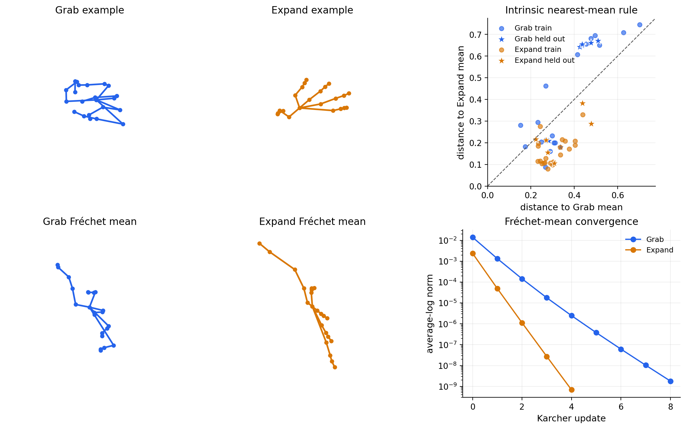

Hand Poses in Kendall Shape Space#
This tutorial analyzes real skeletal hand poses using Kendall shape space. A hand is represented by \(22\) joints in \(\mathbb R^3\). We want to compare the shape of a pose without letting its location, physical scale, or global orientation dominate the result.
The data are a 52-pose subset of the SHREC’17 3D hand-gesture dataset, distributed by the Geomstats dataset module. There are 25 Grab poses and 27 Expand poses. The source study is De Smedt et al., SHREC’17 Track: 3D Hand Gesture Recognition Using a Depth and Skeletal Dataset.
GeoJAX vendors the two small source text files with this page, so the documentation remains executable without downloading data at build time. See the accompanying license and provenance notice for the upstream source and redistribution terms.
Shape-space model#
For \(m\) landmarks in \(\mathbb R^d\), a pre-shape is an \(m\times d\) matrix \(X\) satisfying
Centering removes translation and normalization removes scale. Kendall shape space additionally identifies \(X\) and \(XR\) for every \(R\in SO(d)\), thereby removing global orientation. Its distance is the spherical distance after orientation-preserving Procrustes alignment:
We will compute a Fréchet mean for each pose class and classify held-out hands by their nearest intrinsic mean.
import jax
jax.config.update("jax_enable_x64", True)
from pathlib import Path
import jax.numpy as jnp
import matplotlib.pyplot as plt
import numpy as np
from geojax.geometry import KendallShape
plt.rcParams.update({
"figure.dpi": 200,
"savefig.dpi": 240,
"font.size": 11,
"axes.titlesize": 12,
"axes.labelsize": 11,
"xtick.labelsize": 10,
"ytick.labelsize": 10,
"legend.fontsize": 9,
"axes.spines.top": False,
"axes.spines.right": False,
})
Load the landmark data#
The files are the original whitespace-separated Geomstats data. Their first rows are numeric column headers, matching the upstream loader, so we skip one row before reshaping each pose to \(22\times3\).
candidate_directories = [
Path("../_static/data/hands"),
Path("docs/_static/data/hands"),
]
data_directory = next(path for path in candidate_directories if path.exists())
raw_hands = np.loadtxt(data_directory / "hands.txt", skiprows=1).reshape(-1, 22, 3)
labels = np.loadtxt(data_directory / "labels.txt", skiprows=1, dtype=int)
label_names = {0: "Grab", 1: "Expand"}
bones = np.array(
[
[0, 1], [0, 2], [2, 3], [3, 4], [4, 5],
[1, 6], [6, 7], [7, 8], [8, 9],
[1, 10], [10, 11], [11, 12], [12, 13],
[1, 14], [14, 15], [15, 16], [16, 17],
[1, 18], [18, 19], [19, 20], [20, 21],
]
)
print("landmark array:", raw_hands.shape)
for label, name in label_names.items():
print(f"{name:6s}: {int(np.sum(labels == label))} poses")
landmark array: (52, 22, 3)
Grab : 25 poses
Expand: 27 poses
Remove translation and scale#
KendallShape.project centers every configuration and normalizes its
Frobenius norm. Rotation is not removed by choosing one permanent alignment;
it is handled by the quotient operations whenever distances and logarithms are
evaluated.
M = KendallShape(size=(22, 3))
hands = M.project(jnp.asarray(raw_hands))
centroid_norms = jnp.linalg.norm(jnp.mean(hands, axis=1), axis=1)
preshape_norms = jnp.linalg.norm(hands, axis=(1, 2))
print("All projected hands are regular pre-shapes:", bool(jnp.all(M.belongs(hands))))
print("Largest centroid norm:", f"{float(jnp.max(centroid_norms)):.3e}")
print("Largest unit-norm error:", f"{float(jnp.max(jnp.abs(preshape_norms - 1))):.3e}")
print("Intrinsic dimension:", M.dim)
All projected hands are regular pre-shapes: True
Largest centroid norm: 7.182e-16
Largest unit-norm error: 2.220e-16
Intrinsic dimension: 59
Compute intrinsic group means#
At a current estimate \(\mu_t\), the average logarithm
is the negative Riemannian gradient of the Fréchet objective. The Karcher iteration
therefore moves along the intrinsic average displacement. We initialize by Procrustes-aligning the group to one observation and projecting its ambient average.
Every fourth observation is held out before estimating the two means. This is a deterministic illustrative split, not a claim of benchmark performance.
def initial_shape_mean(points):
reference = points[0]
aligned = jax.vmap(lambda point: M.align(point, reference)[0])(points)
return M.project(jnp.mean(aligned, axis=0))
def frechet_mean(points, maxiter=40, tolerance=1e-8):
mean = initial_shape_mean(points)
update_norms = []
for _ in range(maxiter):
logarithms = jax.vmap(lambda point: M.log(mean, point))(points)
update = jnp.mean(logarithms, axis=0)
update_norm = float(M.norm(mean, update))
update_norms.append(update_norm)
if update_norm < tolerance:
break
mean = M.exp(mean, update)
return mean, np.asarray(update_norms)
sample_ids = np.arange(len(labels))
train_mask = sample_ids % 4 != 0
test_mask = ~train_mask
means = []
mean_histories = []
for label in (0, 1):
group = hands[jnp.asarray(train_mask & (labels == label))]
mean, history = frechet_mean(group)
means.append(mean)
mean_histories.append(history)
print(
f"{label_names[label]:6s}: {len(group):2d} training poses, "
f"{len(history):2d} updates, final norm {history[-1]:.3e}"
)
means = jnp.stack(means)
print("Distance between group means:", f"{float(M.dist(means[0], means[1])):.4f}")
Grab : 18 training poses, 9 updates, final norm 1.804e-09
Expand: 21 training poses, 5 updates, final norm 6.849e-10
Distance between group means: 0.2602
Classify by the nearest mean#
For each hand \(X\), we compute the two intrinsic distances \(d(X,\mu_{\mathrm{Grab}})\) and \(d(X,\mu_{\mathrm{Expand}})\). The smaller one determines the predicted pose.
distances = jax.vmap(
lambda hand: jax.vmap(lambda mean: M.dist(hand, mean))(means)
)(hands)
predictions = np.asarray(jnp.argmin(distances, axis=1))
test_accuracy = np.mean(predictions[test_mask] == labels[test_mask])
print(f"Held-out poses: {int(np.sum(test_mask))}")
print(f"Correct predictions: {int(np.sum(predictions[test_mask] == labels[test_mask]))}")
print(f"Held-out accuracy: {test_accuracy:.1%}")
print("\nHeld-out confusion counts (truth -> prediction)")
for truth in (0, 1):
counts = [
int(np.sum(test_mask & (labels == truth) & (predictions == prediction)))
for prediction in (0, 1)
]
print(f"{label_names[truth]:6s}: Grab={counts[0]:2d}, Expand={counts[1]:2d}")
Held-out poses: 13
Correct predictions: 11
Held-out accuracy: 84.6%
Held-out confusion counts (truth -> prediction)
Grab : Grab= 5, Expand= 2
Expand: Grab= 0, Expand= 6
Visualize poses, means, and separation#
For display only, the Expand mean is aligned to the Grab mean so both use a common orientation. The distance scatter is already quotient-invariant: points below the diagonal are closer to Grab, and points above it are closer to Expand. Stars mark the held-out observations.
colors = {0: "#2563EB", 1: "#D97706"}
def draw_hand(ax, hand, color, title):
hand = np.asarray(hand)
for start, end in bones:
segment = hand[[start, end]]
ax.plot(segment[:, 0], segment[:, 1], segment[:, 2], color=color, linewidth=2.0)
ax.scatter(hand[:, 0], hand[:, 1], hand[:, 2], color=color, s=18, depthshade=False)
center = np.mean(hand, axis=0)
radius = 0.55 * np.max(np.ptp(hand, axis=0))
for setter, coordinate in zip((ax.set_xlim, ax.set_ylim, ax.set_zlim), center):
setter(coordinate - radius, coordinate + radius)
ax.set_title(title)
ax.set_box_aspect((1, 1, 1), zoom=1.35)
ax.set_axis_off()
ax.view_init(elev=24, azim=-58)
grab_index = int(np.flatnonzero(labels == 0)[0])
expand_index = int(np.flatnonzero(labels == 1)[0])
grab_example = M.align(hands[grab_index], means[0])[0]
expand_example = M.align(hands[expand_index], means[1])[0]
aligned_expand_mean = M.align(means[1], means[0])[0]
fig = plt.figure(figsize=(12.0, 7.2), constrained_layout=True)
grid = fig.add_gridspec(2, 3)
draw_hand(fig.add_subplot(grid[0, 0], projection="3d"), grab_example, colors[0], "Grab example")
draw_hand(
fig.add_subplot(grid[0, 1], projection="3d"),
expand_example,
colors[1],
"Expand example",
)
draw_hand(fig.add_subplot(grid[1, 0], projection="3d"), means[0], colors[0], "Grab Fréchet mean")
draw_hand(
fig.add_subplot(grid[1, 1], projection="3d"),
aligned_expand_mean,
colors[1],
"Expand Fréchet mean",
)
distance_axis = fig.add_subplot(grid[0, 2])
distance_array = np.asarray(distances)
for label in (0, 1):
training = train_mask & (labels == label)
held_out = test_mask & (labels == label)
distance_axis.scatter(
distance_array[training, 0],
distance_array[training, 1],
color=colors[label],
alpha=0.65,
s=28,
label=f"{label_names[label]} train",
)
distance_axis.scatter(
distance_array[held_out, 0],
distance_array[held_out, 1],
color=colors[label],
edgecolor="white",
marker="*",
s=105,
linewidth=0.7,
label=f"{label_names[label]} held out",
)
limit = 1.04 * float(jnp.max(distances))
distance_axis.plot([0, limit], [0, limit], color="0.35", linestyle="--", linewidth=1.0)
distance_axis.set(
xlim=(0, limit),
ylim=(0, limit),
xlabel="distance to Grab mean",
ylabel="distance to Expand mean",
title="Intrinsic nearest-mean rule",
)
distance_axis.set_aspect("equal")
distance_axis.grid(alpha=0.2)
distance_axis.legend(frameon=False, fontsize=9)
convergence_axis = fig.add_subplot(grid[1, 2])
for label, history in enumerate(mean_histories):
convergence_axis.semilogy(
np.arange(len(history)),
history,
marker="o",
color=colors[label],
label=label_names[label],
)
convergence_axis.set(
xlabel="Karcher update",
ylabel="average-log norm",
title="Fréchet-mean convergence",
)
convergence_axis.grid(alpha=0.2)
convergence_axis.legend(frameon=False)
plt.show()

The group means summarize the characteristic joint configuration after translation, scale, and orientation have been removed. The classifier is deliberately simple: it demonstrates that intrinsic distances can expose pose information, but a serious evaluation would use repeated subject-aware splits, uncertainty estimates, and comparisons with tangent-space or skeletal models.